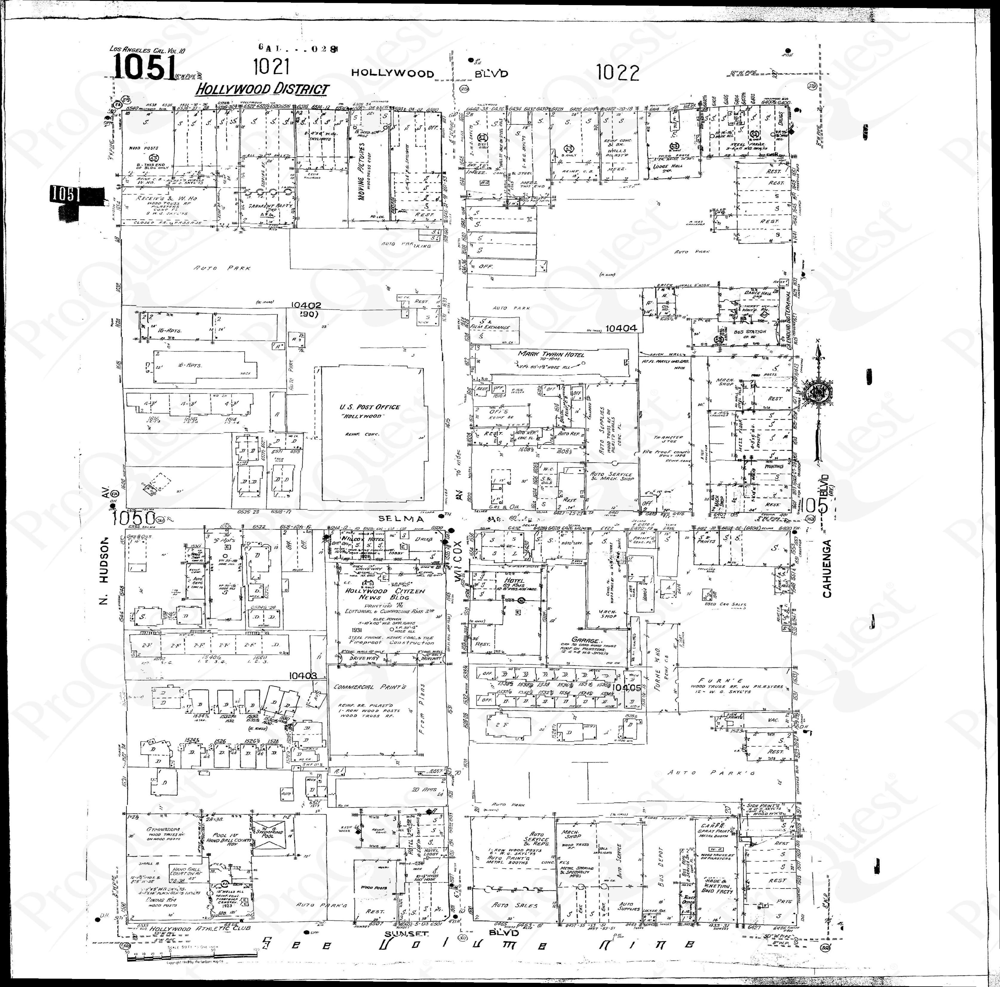
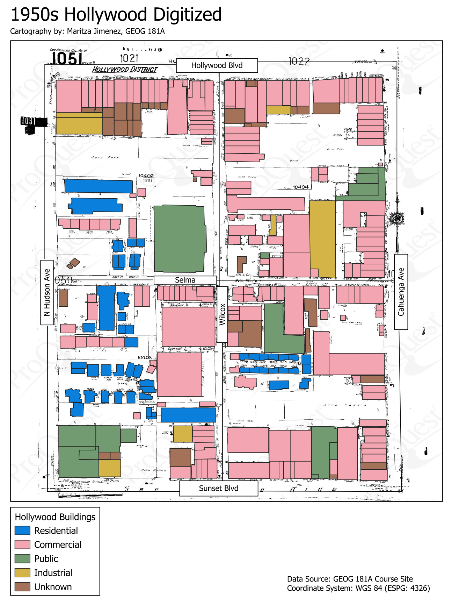

Reconstructing 1950s Hollywood with Vector Digitizing
 
Digitizing an old Hollywood map using vector digitizing offers several benefits, leveraging modern technology to enhance accessibility, accuracy, and usability of historical spatial data.
Here are some key advantages to Digitizing older Maps:
1. Preservation and Accessibility:
- Digital Preservation: Vector digitizing allows for the creation of a digital version of the old Hollywood map, ensuring its preservation in a format that can be easily stored, backed up, and shared without degradation.
- Enhanced Accessibility: Digital maps are easily accessible and can be shared online, making historical information available to a wider audience, including researchers, historians, and the general public.
2. Precision and Accuracy:
- High Precision: Vector digitizing provides high accuracy in capturing the details of the old map, allowing for precise representation of features, street layouts, and landmarks.
- Geometric Accuracy: Vector data maintains geometric accuracy, ensuring that spatial relationships between different elements on the map are preserved.
3. Ease of Analysis and Comparison:
- Overlay and Comparison: Digital maps facilitate overlaying with contemporary maps or other spatial datasets for comparative analysis. This is valuable for understanding changes in the landscape over time.
- Spatial Analysis: Vector data enables spatial analysis, allowing researchers to perform various analytical tasks, such as measuring distances, calculating areas, and identifying patterns.
4. Interactivity and User Engagement:
- Interactive Platforms: Digitized maps can be incorporated into interactive platforms, allowing users to explore and engage with historical information. This can enhance educational experiences and public engagement with local history.
- Layering and Filtering: Vector data supports layering, enabling users to selectively display specific elements or features on the map. This enhances the user experience by providing customized views.
5. Integration with Geographic Information Systems (GIS):
- GIS Compatibility: Digitized vector data seamlessly integrates with GIS platforms, enabling users to combine historical maps with modern spatial datasets. This integration enhances the analytical capabilities of GIS for researchers and planners.
6. Efficient Editing and Updates:
- Easy Editing: Vector data allows for efficient editing, making it easy to update or correct information on the map without compromising its quality.
- Versioning: Digital versions can be versioned, allowing for the tracking of changes and updates over time.
7. Publication and Sharing:
- Digital Publishing: Digitized maps can be published digitally, making it easier to share with a wider audience through websites, presentations, or mobile applications.
- Printing Flexibility: Vector data allows for high-quality printing at various scales without loss of detail or resolution.
8. Cost and Time Efficiency:
- Reduced Reproduction Costs: Once digitized, maps can be reproduced at minimal cost compared to traditional printing methods.
- Faster Data Retrieval: Digital maps facilitate quicker data retrieval and manipulation, saving time for researchers and historians.
In summary, vector digitizing of old Hollywood maps brings numerous benefits, ranging from improved preservation and accessibility to enhanced precision, analysis capabilities, and user engagement. It transforms historical maps into dynamic, interactive resources that contribute to the understanding and appreciation of Hollywood's rich history.